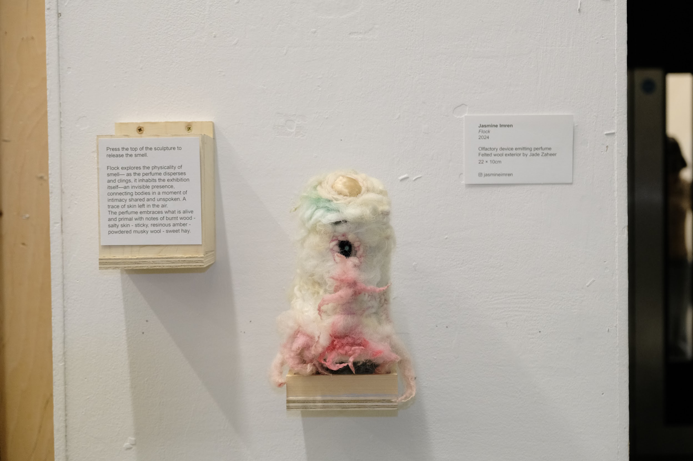

Flock
Olfactory device emitting perfume Felted wool exterior by Jade Zaheer 22cm x 10cm
Flock explores the physicality of smell— as the perfume disperses and clings, it inhabits the exhibition itself—an invisible presence, connecting bodies in a moment of intimacy shared and unspoken. A trace of skin left in the air. The perfume embraces what is alive and primal with notes of burnt wood - salty skin - sticky, resinous amber - powdered musky wool - sweet hay